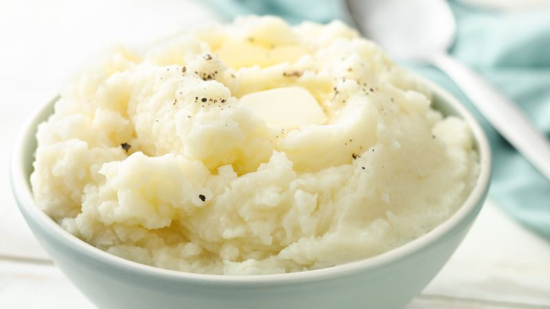

Mashed Potatoes Recipe

Enjoy some soft creamy mashed potatoes like the image above.
INGREDIENTS
- Box of premade mashed potatoes
- Butter
- Chives
Optional Add-Ons
DIRECTIONS
- Microwave premade mashed potatoes for 5 minutes
- Add optional ingridents
- Stir
- Enjoy!
BACK TO MAIN